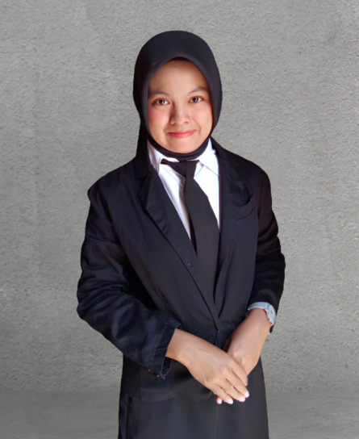
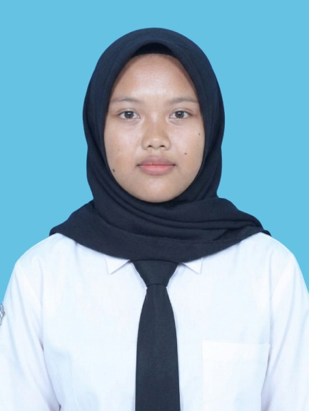
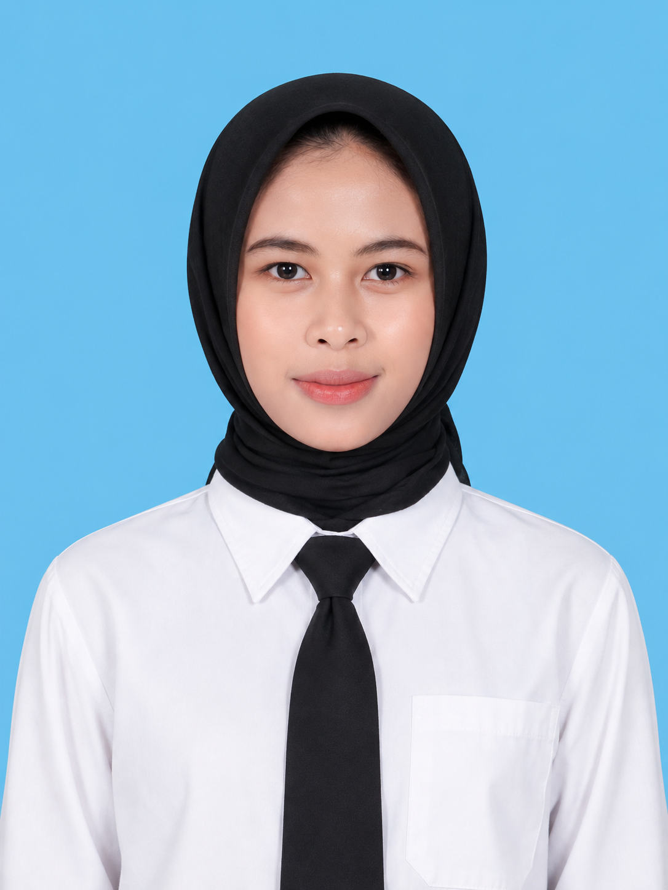
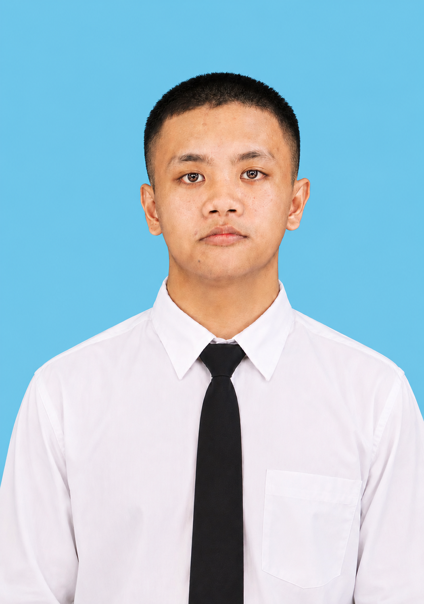
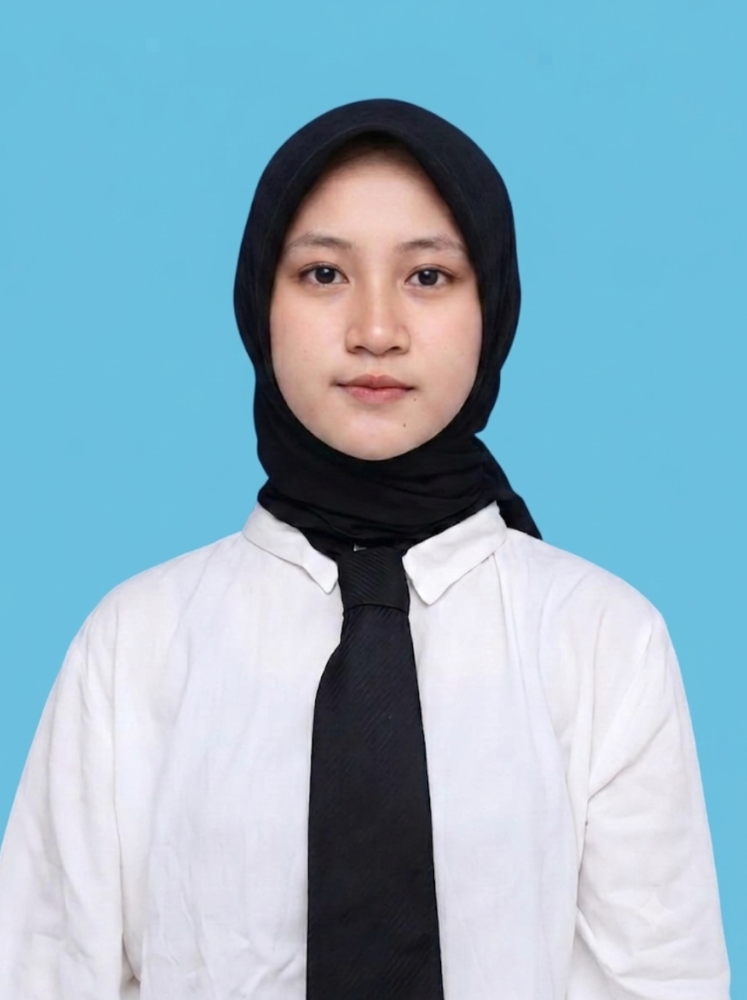

Kelompok Python Development
📍 Politeknik Negeri Madiun | Teknologi Informasi
Tim IT yang berfokus pada Web Engineering, UI/UX Design, dan System Analysis.
Daftar Portofolio Anggota Tim

Project ManagerAnnisa Rifa Aulia
"PM & Software Architecture ✨. Mengkoordinasikan pengembangan perangkat lunak dan arsitektur sistem berbasis Python."
Vika Aditya Saputra
"Frontend & Python Basic 🚀. Spesialis antarmuka pengguna responsif dan integrasi logika frontend Web & Python."

UI/UX DesignerAz-Zahra Artika Putri
"UI/UX Design Enthusiast 🎨. Merancang desain pengalaman pengguna (UX) yang intuitif dan antarmuka visual (UI) yang estetis."

Backend DeveloperAnik Isnaeni
"Backend & Database 💻. Pengelolaan basis data, manajemen server, dan pembuatan RESTful API berbasis Python."

Python ProgrammerSyauqi Nurrochman P.
"Python & Algorithms 📊. Algoritma pemrograman Python, pemrosesan skrip, dan otomasi logika sistem."
Syahan Bakti Ramadika
"Data Analytics & Viz 📈. Analisis data komprehensif, pemrosesan informasi, dan visualisasi data."

System AnalystRadhia Ayu
"Systems & Quality Assurance 🔍. Pengujian sistem, analisis kebutuhan bisnis, serta penjaminan kualitas aplikasi (QA)."